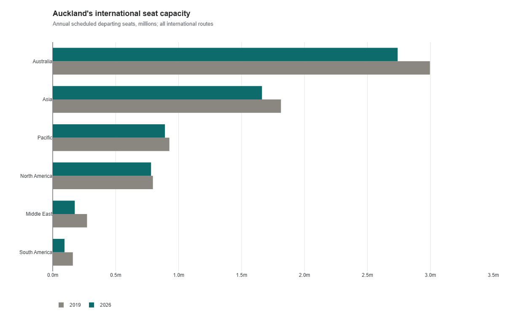

Reconnecting to the world.
While Auckland remains down on seats (9% vs 2019), Auckland’s destination count is back to 40 international airports, just short of the 42 in 2019.
The list has changed substantially since Covid. Six airports have dropped off and four have joined.


6 airports removed
Bangkok, Chengdu Shuangliu, Osaka, Manila, Chicago and Suva.
4 airports added
New York, Dallas, Hobart and Haikou.
Note: I’ve filtered out any routes with fewer than 50 flights a year, including Western Sydney (29) and Chengdu Tianfu (35). Chengdu hasn’t gone away. It’s changed airports, and the new one falls below the cutoff.
Seat Capacity is lacking
There are 6.34 million international seats scheduled out of Auckland this year, down from 6.96 million in 2019.

| Destination region | 2019 | 2026 | Change |
|---|---|---|---|
| Australia | 2.996 | 2.740 | -8.6% |
| Asia | 1.813 | 1.662 | -8.3% |
| Pacific | 0.927 | 0.891 | -3.8% |
| North America | 0.796 | 0.781 | -1.9% |
| Middle East | 0.273 | 0.175 | -35.7% |
| South America | 0.160 | 0.094 | -41.5% |
| Total | 6.964 | 6.343 | −8.9% |

While the US has two new routes; New York and Dallas the US still makes up about the same share of seats: 10.3%, compared with 10.2% in 2019. In fact, every region is still below its 2019 seat total.
The golden era
Looking back on it, 2012 to 2019 was an absolute boom. Auckland went from 33 airports to 42. Doha, Dubai, Houston, Chicago and Bali.


I’m sharing a graph a day for six weeks, starting with aviation. Day 1 down, 41 to go!
Try the CSV route map with your own routes.